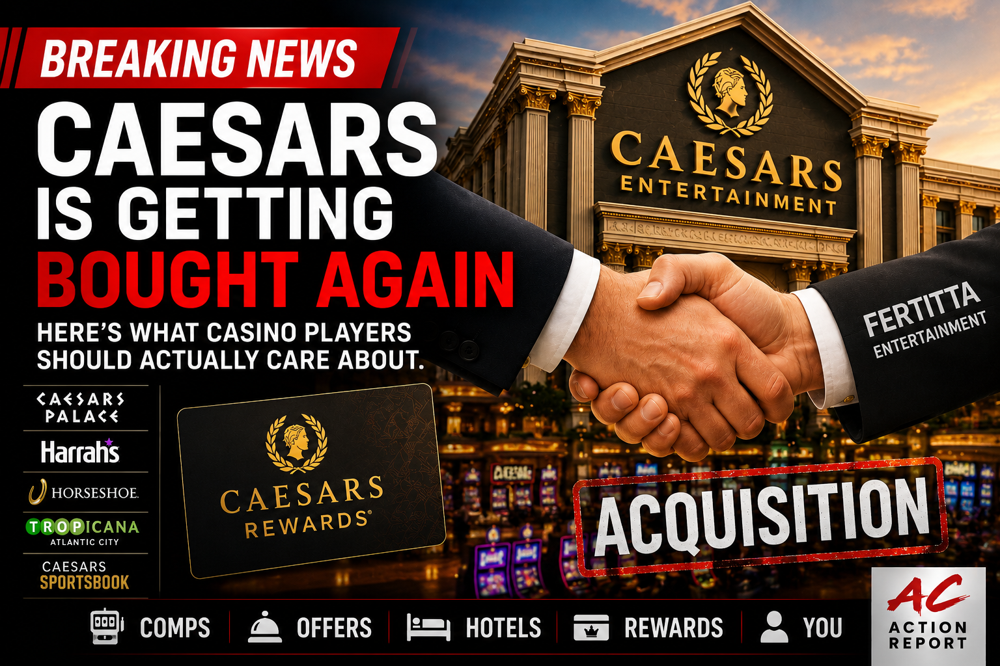

Breaking News
For a lot of casino regulars, Caesars has long felt less like one company and more like a giant tangled casino universe: Caesars, Harrah’s, Tropicana, Horseshoe, Caesars Rewards, Vegas, Atlantic City, regional casinos, sports betting, comp offers, random free rooms, and hosts who sometimes disappear until your play picks up again.
Now Caesars is heading into another major ownership change. Fertitta Entertainment, controlled by Tilman Fertitta, is set to acquire Caesars Entertainment in a deal valued around $17.6 billion including assumed debt. Caesars shareholders are expected to receive $31 per share in cash, and the deal includes a go-shop period allowing Caesars to seek other offers through July 11.
For regular casino players, the big question is simple:
Fertitta Entertainment already owns the Golden Nugget casino brand along with Landry’s restaurants, hotels, and other hospitality businesses. The company’s footprint includes names many casino travelers already recognize, including Golden Nugget, Rainforest Cafe, Bubba Gump Shrimp Co., and other dining and entertainment brands.
The deal is not expected to instantly change your offers, tier status, or casino experience tomorrow. These major ownership changes take time, approvals, integration, and operational planning. But players are right to pay attention because casino changes often show up quietly before they become obvious.
To understand why this matters, it helps to remember how Caesars became such a complicated casino universe.
Years ago, Harrah’s built one of the smartest casino loyalty systems in the country. They understood that casino customers were not just gamblers. They were repeat travelers, restaurant guests, hotel customers, concertgoers, and weekend regulars.
Then Harrah’s bought Caesars, creating one of the largest casino companies in America. Private equity later loaded the company with heavy debt before the financial crisis, leading to years of bankruptcy fights. In 2020, Eldorado Resorts bought Caesars and kept the Caesars name because it carried more national recognition.
That is why today’s Caesars can feel confusing: part old-school Vegas empire, part regional casino chain, part loyalty-program machine, part sports-betting operator, all running through one rewards card.
This deal did not come out of nowhere. Caesars has been dealing with several tough realities at once:
The casinos are still busy, but regular players often feel these changes before Wall Street starts talking about them.
Tilman Fertitta is not an outsider to casinos. He already operates Golden Nugget casinos and a large restaurant, hotel, and entertainment business. That matters because casino players do not only judge a property by the games. They judge the whole trip: rooms, food, nightlife, hosts, service, comps, offers, and how the place feels once they are actually on property.
Right now, nothing specific has been announced about changes to Caesars Rewards, comp formulas, Atlantic City operations, or individual property upgrades. But regular casino players know how ownership changes usually begin.
The offers start changing. Room prices move. Hosts become more or less responsive. Certain perks fade away. Or suddenly, properties that felt neglected start getting attention again.
Most players are not studying deal documents. They care about a few practical questions:
Caesars controls three major Atlantic City properties: Caesars Atlantic City, Harrah’s Resort, and Tropicana Atlantic City.
Atlantic City regulars know these three casinos have very different personalities. Borgata still feels like the strongest all-around operation in town. Hard Rock brings major weekend energy, and Ocean continues to feel newer and fresher than much of the market.
The Caesars properties can feel uneven. Some areas remain lively and well-used, while others feel like they need more attention. Some offers are still solid, but many longtime players feel the rewards system has tightened compared to years ago.
That is why Atlantic City players are watching this closely. Not because of the billion-dollar headline, but because they want to know whether Caesars, Harrah’s, and Tropicana will finally feel more competitive again.
Caesars Rewards is the heart of this story for players. It connects Vegas, Atlantic City, regional casinos, sports betting, hotels, restaurants, and more.
Even with complaints, Caesars Rewards still has one of the largest national casino footprints in the country. That reach is the reason many players keep giving Caesars action even when offers feel weaker than they used to.
Players are nervous because they do not want to wake up to harder tiers, weaker offers, more fees, disappearing perks, or a rewards program that becomes less useful.
None of those changes have been announced. But those are exactly the areas players will watch first.
More Atlantic City Casino Analysis
If you enjoy this type of Atlantic City casino analysis, ACAR also publishes deeper breakdowns covering casino-floor trends, slot payout data, tier-credit multipliers, property comparisons, and real-world casino observations across Atlantic City and regional casino markets.
Caesars has survived mergers, bankruptcy fights, private equity owners, sports-betting wars, and plenty of tough cycles.
Now it may be heading into another major ownership era under someone who already knows casinos, restaurants, hotels, and hospitality from the inside.
For regular players, the question is not really about the deal value. It is much simpler:
Casino regulars will know the answer long before any polished press release tells them.
This article references current reporting from Reuters and the Associated Press on the Fertitta Entertainment acquisition of Caesars Entertainment.